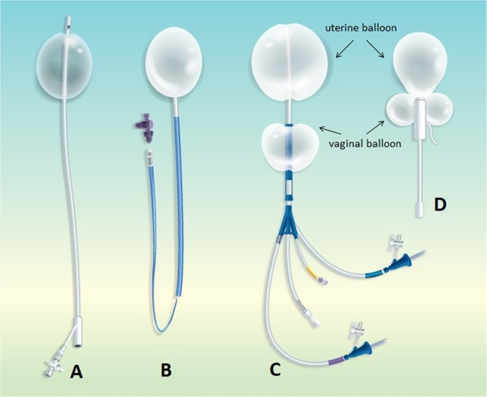
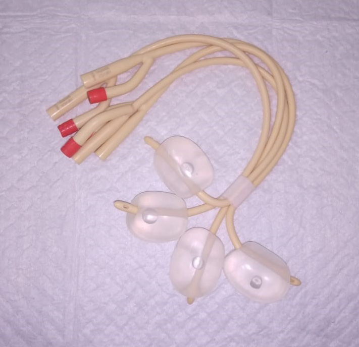

Página 5 · Hemorragia puerperal
Atonia II: do balão à histerectomia
Balão de Bakri
Insuflado dentro da cavidade, comprime a ferida endometrial de dentro para fora. Setas convergentes: pressão positiva empurra a parede sangrante.
Sistema JADA
Cria um vácuo (pressão negativa) que puxa as paredes e força a contração. Setas de sucção: o mecanismo inverso, para o mesmo fim.
Mesmo resultado — estancar. Raciocínio oposto: um empurra, o outro suga.
O balão entra ANTES da cirurgia
Falhou o degrau clínico. O próximo lance não é abrir a paciente — é o tamponamento intrauterino com balão. O balão entra antes da sutura de B-Lynch, antes da ligadura vascular e muito antes da histerectomia. Ele é o degrau que pode poupar a cirurgia inteira: se funcionar, você estanca a hemorragia sem uma única incisão. A ordem importa porque cada degrau evitado é uma agressão a menos numa paciente que já está sangrando.
Balão de Bakri (e o Foley de recurso)
O balão mais clássico é o balão de Bakri: um tamponamento intrauterino que, insuflado dentro da cavidade, comprime a ferida endometrial de dentro para fora, diminuindo o fluxo. É compressão mecânica pura — a parede sangrante é empurrada e o sangramento cai. Onde não há Bakri, improvisa-se com sonda de Foley — mais de uma, cerca de três —, insuflando os balonetes dentro do útero para comprimir a ferida. Se o sangramento cessa, o balão é mantido por 12 até no máximo 24 horas, sempre com ocitocina e massagem em curso; o esvaziamento é gradual (por etapas, ~100 mL a cada 15 min). Dando certo, evita-se o procedimento cirúrgico.


Bakri e Foley trabalham no mesmo sentido — empurram a parede (pressão positiva); é o vetor oposto ao do JADA.
Bakri: Kong & To, BMC Pregnancy and Childbirth 2020, CC BY 4.0. Foley: Bukhari N & Mazhar T, J Med Sci 2023;31(2), Fig. 3, CC BY 4.0.
JADA — o raciocínio inverso
Aqui está a comparação que fixa a página. O sistema JADA é um dispositivo mais recente (ainda pouco cobrado em prova, mas diferencial de vanguarda) que trabalha na lógica exatamente inversa à do balão. Em vez de comprimir as paredes de dentro para fora, ele cria um vácuo — pressão negativa intrauterina (na ordem de 80 ± 10 mmHg) — que força a contração do útero, puxando e reduzindo as paredes para diminuir o fluxo. Balão empurra; JADA suga. Mesmo objetivo (estancar), mecanismos opostos. É mais uma ferramenta para evitar chegar à histerectomia, e sua permanência costuma ser bem menor que a do balão (medianas de poucas horas).
Não há foto real do sistema JADA comercial-segura (as fontes encontradas eram All Rights Reserved ou CC BY-NC-ND). Por isso o mecanismo do JADA — o vácuo que puxa as paredes, oposto ao balão — é ensinado pelo painel-herói abaixo (toggle balão ↔ JADA com o vetor invertendo). Uma ilustração autoral do dispositivo pode ser produzida se o dono da plataforma quiser.
B-Lynch — o suspensório hemostático
Se o tamponamento não resolve, sobe-se para a sutura de B-Lynch (fidelidade clínica: é B-Lynch, não “Bellini” — os ductos de Bellini são renais e não têm nada com isto). A B-Lynch é um ponto hemostático que envolve o útero como um suspensório, comprimindo o corpo uterino de fora e diminuindo a perfusão e o fluxo que chega a ele. Usa fio absorvível — depois se absorve sem deixar problema — e serve para controlar a hemorragia naquele momento. Detalhe cirúrgico cobrável: em parto vaginal, para fazer a B-Lynch é preciso abrir — laparotomia e exteriorização do útero para passar o ponto (na cesariana o abdome já está aberto).
Ligaduras e embolização — e a ilíaca “só no livro”
Havendo hemodinamicista, cabe a embolização — ela pode até vir antes da B-Lynch, mas demora a ser montada, então na prática costuma-se ir direto para a B-Lynch. Outra opção cirúrgica é a ligadura vascular: a ligadura da artéria uterina. E há a pegadinha teórica: a ligadura da artéria ilíaca interna (hipogástrica) é “quase só no livro” — teórica muito mais do que prática. A banca teórica pode cobrar; no dia a dia, é pouco usada. Olho de banca: se a questão oferece “ligadura de ilíaca interna” como conduta corriqueira, desconfie — é distrator de manual.
Histerectomia — o último recurso e o relógio de 1,5 h
No topo da escada está a histerectomia — o último recurso, nunca de cara numa atonia. Tentam-se primeiro todas as medidas mais simples e conservadoras, subindo a escada até ela. Mas há um contrapeso que amarra tudo à voz do tempo: se, após cerca de 1,5 hora do início da hemorragia, o controle não foi obtido, considera-se a histerectomia — antes de a paciente entrar na tríade letal (coagulopatia + hipotermia + acidose). Ou seja: sobe-se a escada sem pular degrau, mas rápido. Demorar demais para chegar ao topo também mata. É o equilíbrio de todo o manejo: nem pular para a mutilação, nem se enrolar nos degraus baixos enquanto o relógio corre.
Tamponamento intrauterino
Balão de Bakri (ou Foley de recurso), mantido 12–24 h — ou JADA (vácuo, permanência menor). Pode poupar a cirurgia.
Sutura de B-Lynch
Suspensório com fio absorvível; em parto vaginal exige laparotomia.
Ligadura vascular / embolização
Ligadura da artéria uterina (ou embolização, se hemodinamicista). Ilíaca interna = “só no livro”.
Histerectomia
Último recurso — nunca de cara. Considerada se o controle não veio em ~1,5 h, antes de coagulopatia + hipotermia + acidose.
Quiz — fixação
Atonia refratária a massagem e uterotônicos, paciente ainda sangrando e estável para tentativa conservadora. Qual o próximo degrau?
- B — a virada. O balão segue os uterotônicos e pode poupar a cirurgia — comprime a ferida endometrial de dentro para fora. Subir para ele antes de abrir a paciente é a essência da escada.
- A. Histerectomia é o último recurso; indicá-la aqui pula todos os degraus conservadores — o erro que todo o manejo combate.
- C. A ligadura de ilíaca interna é “só no livro” e, mesmo entre as cirúrgicas, não precede o tamponamento. Distrator de manual.
- D. “Aguardar 24 h” numa hemorragia ativa contraria o mantra do tempo — o retardo mata. Espera passiva não é degrau nenhum.
Sobre balão de Bakri e sistema JADA, assinale a correta:
- B — a virada. Mecanismos opostos para o mesmo fim — balão empurra, JADA puxa por vácuo (~80 mmHg). É o contraste nuclear da página.
- A. Iguala os dois por compressão, apagando o que distingue o JADA (o vácuo). Perde o conceito de vanguarda.
- C. Inverte os mecanismos. Trocar quem comprime e quem suga quebra o raciocínio inverso — o erro que o painel visual existe para blindar.
- D. São dispositivos diferentes com princípios físicos opostos, não marcas do mesmo aparelho.
Sobre a sutura de B-Lynch, o que está correto?
- B — a virada. A B-Lynch envolve o útero como suspensório, reduz a perfusão do corpo uterino e usa fio absorvível; num parto vaginal, é preciso abrir para passá-la. Detalhes exatos que a banca cobra.
- A. Confunde sutura de compressão (B-Lynch) com ligadura vascular (ilíaca). São degraus e mecanismos diferentes.
- C. O fio é absorvível de propósito — some depois sem deixar problema. “Permanente” inverte a característica.
- D. A B-Lynch é degrau cirúrgico alto (4), muito depois das drogas. Colocá-la em primeiro é furar a escada.
Toda a escada até aqui trata o T de Tônus. Mas existe um T que se evita antes de sangrar — e uma régua de tempo no terceiro período que, se ignorada, arma a próxima catástrofe. É o T de Tecido, o secundamento e a profilaxia que corta a atonia pela metade.